-
McDonalds OVNI
Roswell, Novo México, Estados Unidos
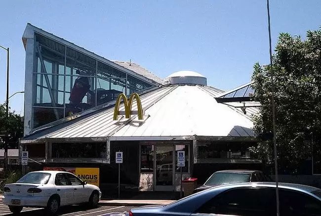
Uma das mais inusitadas lojas do McDonalds fica em Roswell. A cidade recebeu esse restaurante em formato de OVNI
devido ao incidente que aconteceu em 1947, um dos mias famosos da ufologia mundial.
-
McDonalds Trem
Barstow, Califórnia, Estados Unidos
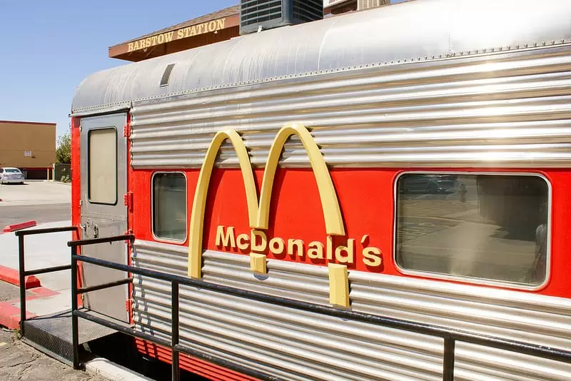
Para quem não sabe, essa é uma das lojas do McDonalds com mais personalidade no mundo. Isso porque ela está instalada, há anos, em um verdadeiro vagão de trem, restaurado especialmente para receber o restaurante.
-
McDonalds Espelhado
Batumi, Georgia, Estados Unidos
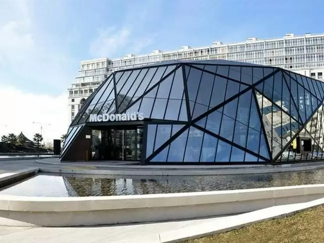
Com jardim interno e cercado por um espelho d’água, essa é uma das lojas do McDonalds mais incríveis atualmente. Ela é inteiramente espelhada, com um visual futurista. Ela foi desenhada para a rede de fast food pelo arquiteto Giorgi Khmaladze.
-
McDonalds McLanche Feliz
Dalla, Texas, Estados Unidos
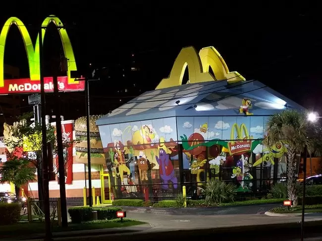
Por motivos óbvios, como você vê na foto, é o restaurante da rede que mais vende no mundo e, com certeza, uma das lojas do McDonalds que faz mais sucesso no mundo.
-
McDonalds Avião
Taupo, Nova Zelândia
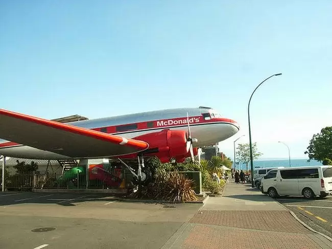
Antes de se tornar uma das lojas do McDonalds mais incríveis do mundo, esse avião, um modelo DC-3, pertencia a uma concessionária de carros, cujo antigo dono havia adquirido a aeronave. Quando o terreno foi vendido para a rede de fast food, nos ano de 1990, o avião veio junto e acabou se tornando um lugar perfeito para a instalação da loja.
-
McDonalds Art Deco
Melbourne, Austrália
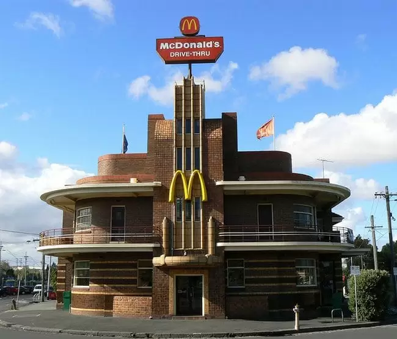
Construído em 1937, esse prédio foi construído para ser um hotel, mas acabou se tornando uma lanchonete nos anos 80. Mas o local não é só mais uma das centenas lojas do McDonalds, ela também é cheia de artes por toda parte.
-
McDonalds Mansão
Long Island, Nova Iorque, Estados Unidos
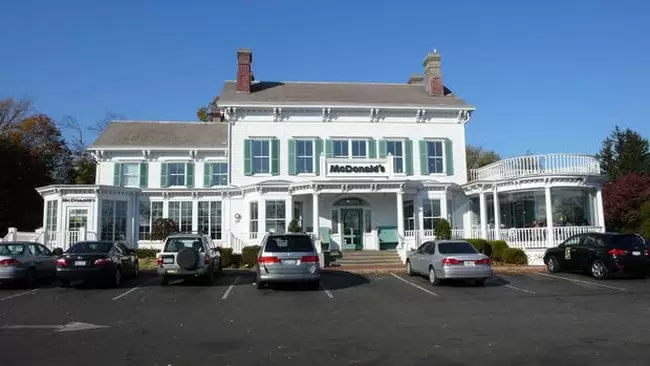
Não precisa nem falar que essa é uma das lojas do McDonalds que todo mundo precisa conhecer, não é mesmo? Ela tem até nome: Denton House. Instalada em uma mansão da década de 1860, o lugar também se trata de uma franquia Larry Anderer, que também é chamada de Larry McDonald’s. Um curiosidade sobre essa loja é que os moradores do lugar, no início, não gostaram da ideia da rede de fast food se instalar no prédio.
-
McDonalds Elegante
Freeport, Maine, Estados Unidos
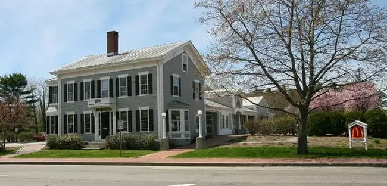
Nada denuncia, na fachada dessa casa de 1850, que em seu interior existe uma das lojas do McDonalds mais incríveis do mundo. A única coisa que denuncia que esse lugar se trata de um restaurante é essa plaquinha discretar no gramado. Conseguiu vê-la?
-
McDonalds na Montanha
Yangshuo, Província de Guangxi, China
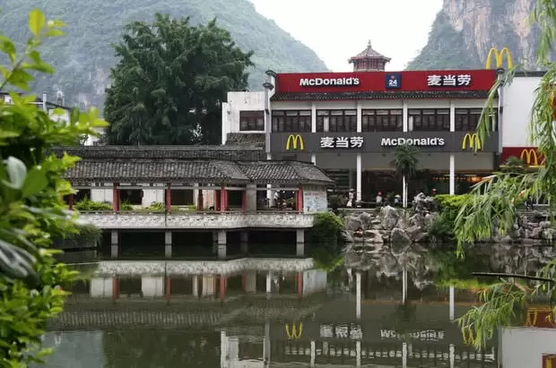
Ao contrário da maioria das lojas do McDonalds, essa fica em um local totalmente inesperado: aos pés de um lugar montanhoso e calmo, às margens de um lago. Embora o restaurante também atenda os moradores locais, ele foi pensado para “socorrer” os mochileiros e alpinistas que passam por ali com um lanchinho rápido.
-
McDonalds Celeiro
Moose Jaw, Saskatchewan, Canadá
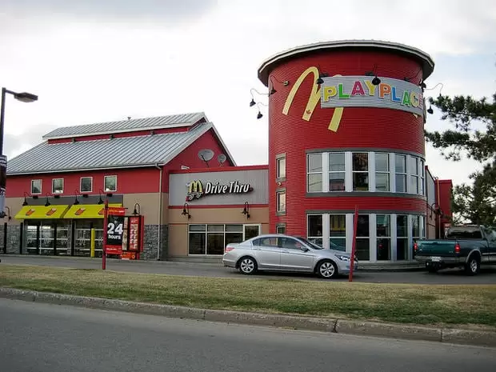
Esse, com certeza, é um dos modelos mais inesperados para uma das lojas do McDonalds. Em forma de celeiro e internamente decorado com temas de fazenda, esse restaurante possuiu também um drive-thru gigante, para que pessoas com tratores também possam ser atendidos no lugar antes ou depois de irem para o trabalho nas lavouras da redondeza.
-
Méqui 1000
São Paulo, Avenida Paulista, São Paulo
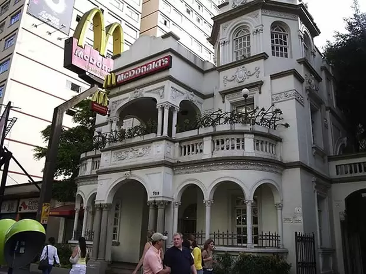
Esse, com certeza, é um dos modelos mais inesperados para uma das lojas do McDonalds. Em forma de celeiro e internamente decorado com temas de fazenda, esse restaurante possuiu também um drive-thru gigante, para que pessoas com tratores também possam ser atendidos no lugar antes ou depois de irem para o trabalho nas lavouras da redondeza.
-
McDonalds colonial
Gramado, Rio Grande do Sul, Brasil
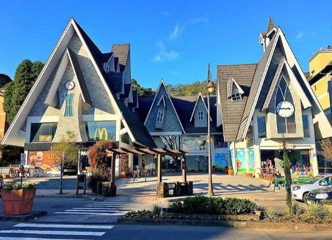
Em Gramado, essa unidade do McDonalds complementa todo espaço turistico!